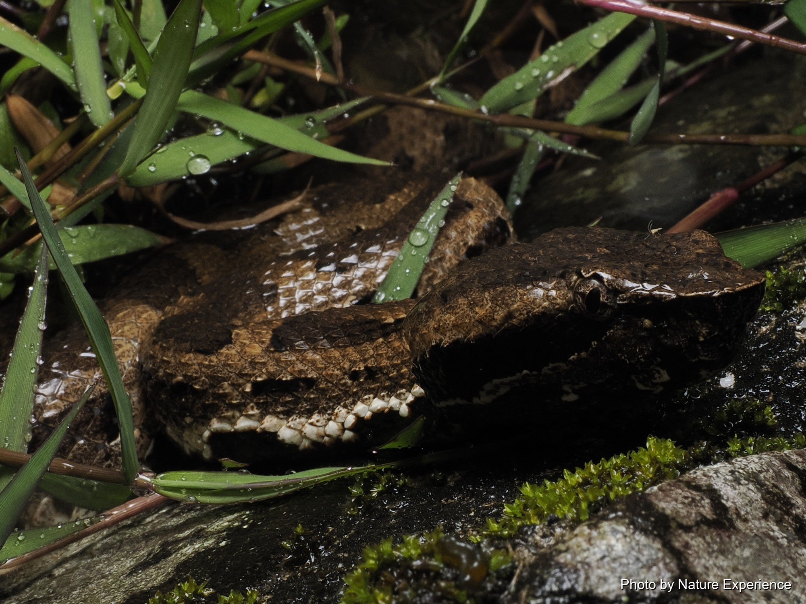
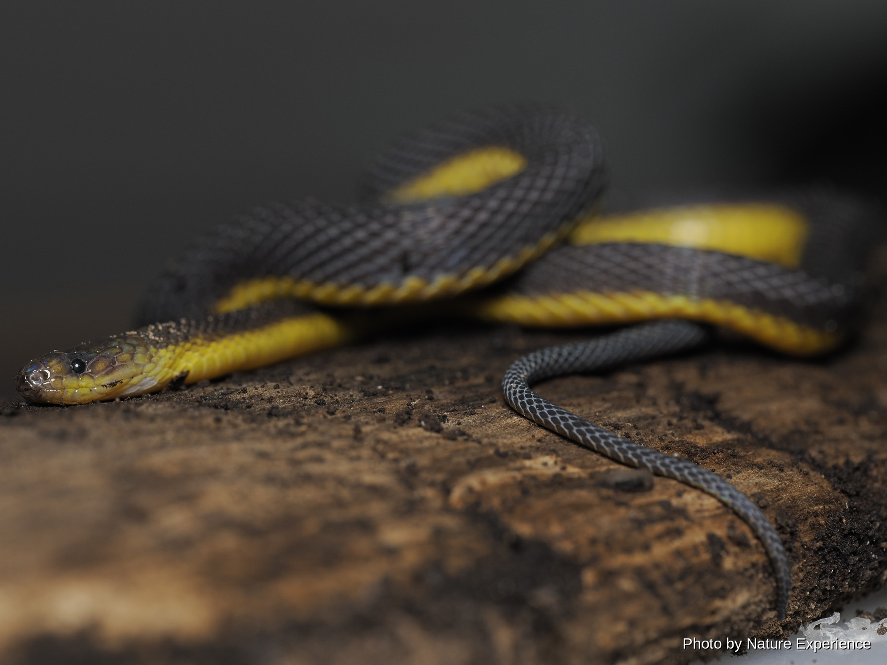

リュウキュウアオヘビ
緑色の美しい体をしたヘビ。 樹上や植物の多い場所などで見られることがあります。
VIEW CREATURE →
奄美大島の夜の森で出会うヘビたち。
毒を持つもの、持たないもの、
森や水辺を好むものなど、それぞれ異なる環境で暮らしています。
奄美大島には、ハブをはじめとするさまざまなヘビが暮らしています。 夜行性の種類が多く、日が暮れて森が静かになると、 少しずつ活動を始めます。
同じヘビの仲間でも、暮らしている場所や活動する時間、 食べるものなどはそれぞれ異なります。 森の中だけでなく、水辺や草むらなどで見つかる種類もいます。
奄美の夜の森を歩いていると、 そんなヘビたちの姿に出会うことがあります。 見つけたときには、まず距離をとって、 その姿や動きを静かに観察してみてください。
奄美大島では、ハブやヒメハブなどの毒蛇に出会う可能性があります。 夜間の森では足元や草むらに注意し、 ヘビを見つけても決して近づいたり、触ったりしないでください。
奄美大島で確認されているヘビの中から、 夜の森で出会うことのある種類を紹介します。 写真や名前をクリックすると、 それぞれのヘビの詳しいページを見ることができます。
緑色の美しい体をしたヘビ。 樹上や植物の多い場所などで見られることがあります。
VIEW CREATURE →
奄美大島を代表する大型のヘビ。 夜間に活動し、さまざまな生き物を捕食します。
VIEW CREATURE →
樹上や草木の上などでも見られることがあるヘビ。 細長い体と特徴的な模様をしています。
VIEW CREATURE →
水辺や湿った場所を好む毒蛇。 雨の夜などには水辺で見つかることがあります。
VIEW CREATURE →
奄美大島を代表する毒蛇。 夜間に活動し、草むらや森の中などさまざまな場所で見られます。
VIEW CREATURE →
奄美に生息する小型の毒蛇。 落ち葉の中や林床などで見つかることがあります。
VIEW CREATURE →
夜行性で、落ち葉や土の中などに潜むことが多いヘビ。 静かな森の中でひっそりと暮らしています。
VIEW CREATURE →夜の森でヘビを見つけたら、 まずはその場で立ち止まり、距離をとって観察しましょう。
特に毒蛇の場合は、驚かせたり追いかけたりせず、 ヘビがどちらへ向かおうとしているのかを確認しながら、 安全な距離を保つことが大切です。
「見つけること」だけではなく、 その生き物がどんな場所で、どんなふうに暮らしているのかを 知ることも、夜の森を楽しむ方法のひとつです。
特に毒蛇には十分な距離をとり、 捕まえたり触ったりしないでください。
夜間は足元が見えにくいため、 懐中電灯などで進行方向を確認しながら歩きます。
ヘビを見つけても追いかけたり、 棒などで刺激したりしないことが大切です。
野生動物の観察では、生き物との距離を保つこと。 無理をせず、安全第一で楽しみましょう。
暗い森の中では、昼間とは違った生き物たちの姿を見ることができます。 奄美大島の自然を、ガイドと一緒にゆっくり観察してみませんか。
NIGHT TOUR →